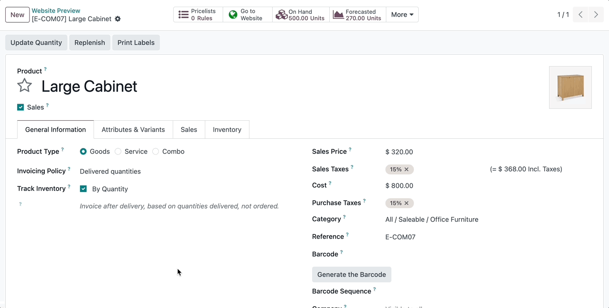
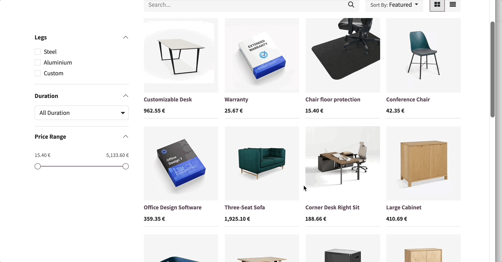

This module allows you to define an image that will be displayed on the website when hovering over the product
App Features
- Defines a secondary image to be displayed in the product listing, carousel, etc
- Easy configuration
- Javascript is not used at any time
- Compatible with community, enterprise and Odoo.sh version of Odoo
Usage
When editing a picture of the product, an option will be displayed that can be activated to define that picture as the one to be displayed as secondary.

Hovering over the listing displays the configured image.

This image is also displayed on the carousels.